Walkthrough for a returning user who has used the app before (recorded from screen capture)
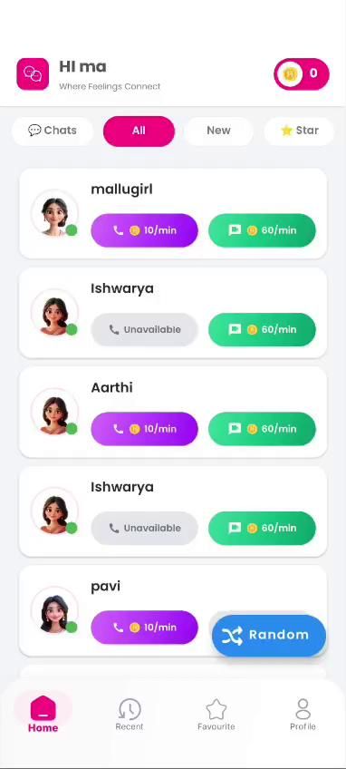
⬈ coins badge (0) ⬅ Paid Call 10/min ⬅ Chat 60/minScreen: HomeFragment (All tab)
A returning old user lands on Home with the full creator list (mallugirl, Ishwarya, Aarthi, pavi...). Each row shows a paid purple Call button (10/min) and green Chat button (60/min). No trial or Free Call chip is visible because the user never activated the trial (or it has lapsed).
userData.coins.
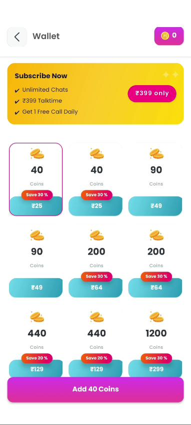
⬇ Subscribe Now ₹399 ⬇ Coin packs ⬆ Add Coins CTAScreen: WalletActivity
Tapping the coin badge on Home opens the Wallet. For an old user the yellow Subscribe Now banner sits at the top listing the three benefits (Unlimited Chats · ₹399 Talktime · 1 Free Call Daily) with a pink ₹399 only pill. Below it is the existing coin-pack grid (40 / 90 / 200 / 440 / 1200 coins) and a pink Add 40 Coins CTA at the bottom.
SubscribeNowBanner conditionally when !userData.isSubscribed.
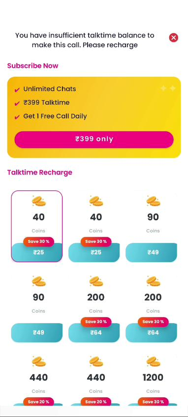
⬇ Triggered by paid Call tap ⬇ Same Subscribe banner ⬇ Talktime packsTrigger: tap a paid Call button (10/min) with coins < required
When an old user taps a purple Call button without enough coins, a full bottom sheet slides up with the message "You have insufficient talktime balance to make this call. Please recharge." It shows the same Subscribe Now yellow banner followed by a Talktime Recharge coin grid.
HomeFragment call-click handler: checks
coins >= requiredCoins; if not, opens
InsufficientTalktimeSheet.
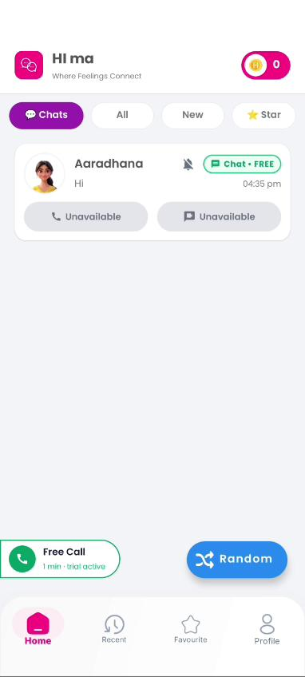
⬇ Chats filter selected ⬅ Chat · FREE badge ⬇ Free Call chip (trial active)Screen: HomeFragment (Chats filter)
Switching to the Chats filter (top pill) shows only creators the user has messaged before. The single row here — Aaradhana with last-message "Hi" at 04:35 pm — carries a green Chat · FREE badge, indicating this thread was free-tier during the trial. Call buttons are Unavailable because the creator is offline.
ChatActivity for that creator (step 5).
chatsAdapter binds only threads with
lastMessage != null; filter pill sets
viewModel.feedMode = CHATS.
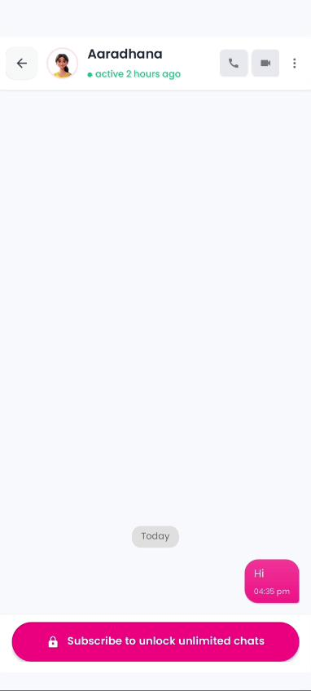
⬇ Chat screen ⬇ Call + Video (locked) ⬇ 🔒 Subscribe pillScreen: ChatActivity (non-subscribed state)
Inside the thread, a pink "🔒 Subscribe to unlock unlimited chats" pill sticks to the bottom. The single "Hi" bubble from trial is visible, but the message input bar is hidden — the user cannot type a new message until they subscribe. Call & video icons in the header behave normally (paid-per-minute).
subscribeUnlockCTA and hides
messageInputBar when
!userData.isSubscribed && !creator.isFree.
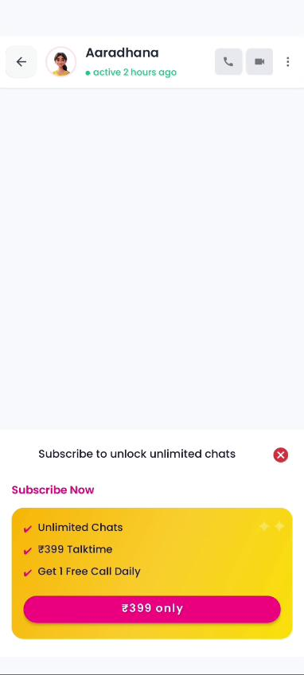
⬇ Sheet slid up from pill ⬇ Subscribe Now banner ⬅ Close (×)Trigger: tap the 🔒 Subscribe pill on step 5
A bottom sheet slides up over the chat (chat stays partially visible above). Header: "Subscribe to unlock unlimited chats" with a red × to dismiss. Below is the same yellow Subscribe Now banner used in Wallet and the insufficient-talktime sheet: Unlimited Chats · ₹399 Talktime · 1 Free Call Daily, with a pink ₹399 only CTA.
SubscribeSheetFragment (reuses
SubscribeNowBanner composable).
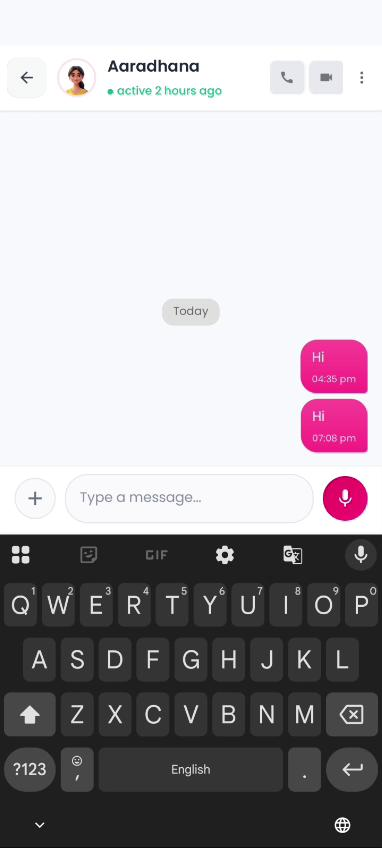
⬇ Subscribed — input unlocked ⬇ Type a message ⬅ Mic (voice note)Screen: ChatActivity (subscribed, keyboard up)
After a successful subscribe the pink pill is replaced by the standard input bar: + attach · Type a message... · pink mic. The soft keyboard is up. Two "Hi" bubbles are visible (04:35 pm and 07:08 pm). Call and video header icons are now tappable (benefits: 1 free call daily from subscription).
subscriptionRepo.isSubscribed flip to
true, subscribeUnlockCTA is hidden and
messageInputBar.visibility = VISIBLE.
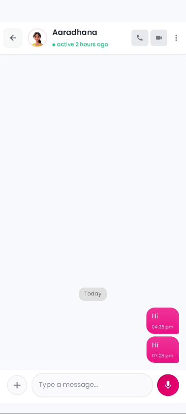
⬅ Sent bubbles ⬅ Timestamps ⬇ Input bar idleScreen: ChatActivity (keyboard dismissed)
After the keyboard is dismissed, the user sees the complete thread: "Hi" at 04:35 pm and "Hi" at 07:08 pm as pink sent bubbles aligned right. The input bar sits idle at the bottom, ready for the next message. No subscribe prompt anywhere — the subscription is active.
chatAdapter renders
messages list; right-aligned with
senderId == currentUser.id.
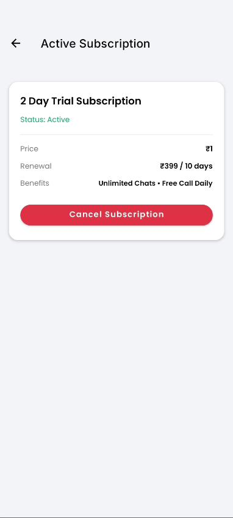
⬇ Status: Active ⬇ Cancel SubscriptionScreen: ActiveSubscriptionActivity
After activation, the user can open Active Subscription from Profile. The card shows 2 Day Trial Subscription, Status: Active, Price ₹1, Renewal ₹399 / 10 days, benefits Unlimited Chats · Free Call Daily, and a red Cancel Subscription button.
userData.subscription.*.
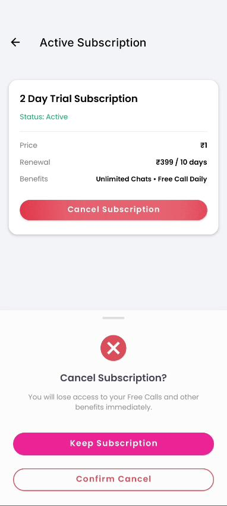
⬇ Cancel confirmation ⬅ Keep ⬅ Confirm CancelTrigger: tap Cancel Subscription on step 9
A confirmation bottom sheet slides up: "Cancel Subscription?" with the message "You will lose access to your Free Calls and other benefits immediately." Two buttons: pink Keep Subscription (primary, safe) and outlined red Confirm Cancel (destructive).
subscriptionRepo.cancel(), returns user to Profile with
status updated, Free Call chip removed from Home.
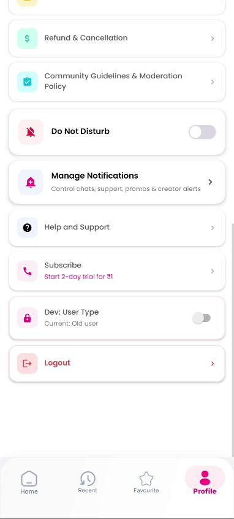
⬇ Subscribe · ₹1 trial ⬅ Dev toggleScreen: ProfileFragment (scrolled)
From the Profile tab (scrolled to Settings & Support) the old user sees a Subscribe row with subtitle "Start 2-day trial for ₹1" — the fourth entry point into the same subscription flow. Below it is a dev-only Dev: User Type toggle showing current state (Old user / New user) used for QA during development.
SubscriptionActivity.
subscribeRow is always visible for
old users; hidden only when userData.isSubscribed == true.
The walkthrough above was extracted from the screen recording
WhatsApp Video 2026-04-22 at 7.11.17 PM.mp4 (86 s, 382×848).
Frames were sampled at 1 fps and the seven key states were selected to
represent each distinct screen. Arrows/labels added in HTML to highlight
tap targets and destinations.
Contrast with the new-user flow: new users with
coins == 0 see a trial bottom sheet on first coin-badge tap,
while old users (coins > 0) go straight to the Wallet
shown in step 2.